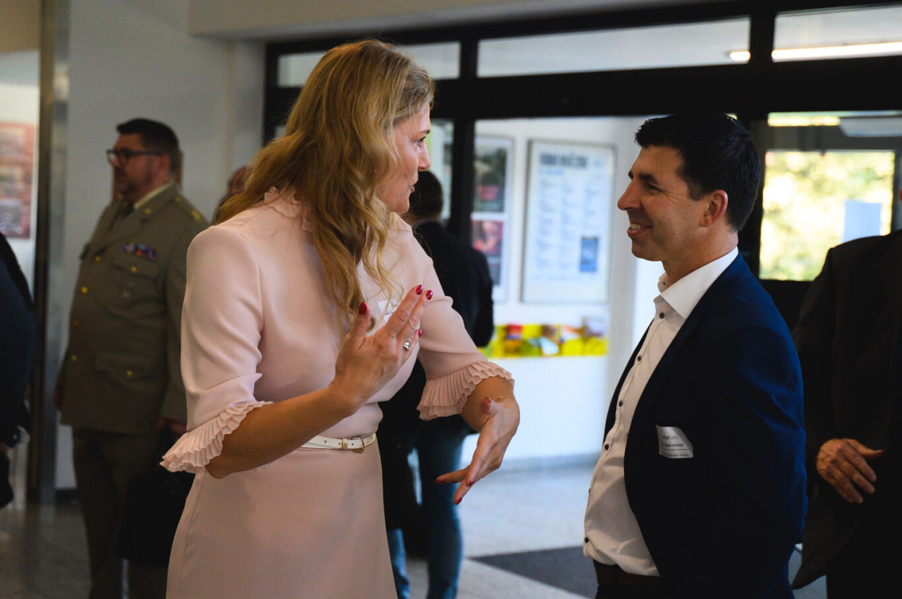
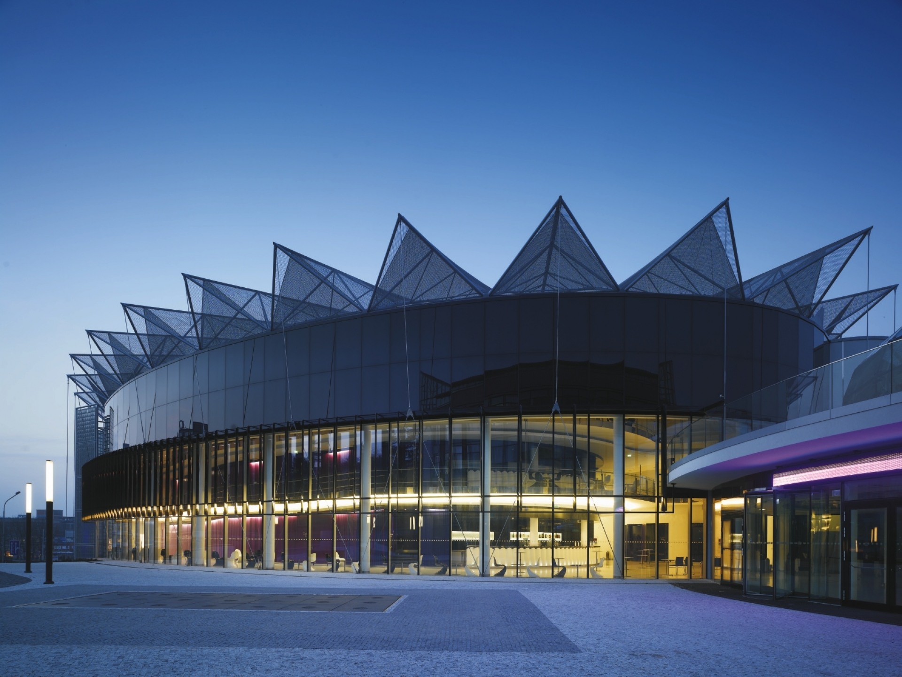

"Nejlepší improvizace je ta, kterou máte předem nacvičenou. CrisCon propojuje přesně ty lidi, co to chápou."
ŘEČNÍK
Ing. Petra Dvořáková
O KONFERENCI
CrisCon není jen konference. Je to místo, kde se potkávají lidé, kteří řeší krizové situace v reálném světě – a ti, kteří hledají způsoby, jak jim předcházet.
ÚČASTNÍKŮ
PŘEDNÁŠEJÍCÍCH
MISE KONFERENCE
Na jednom místě se setkávají experti na bezpečnost, záchranáři, krizoví manažeři i výzkumníci z desítek institucí z akademické sféry i praxe.
DVOUDENNÍ PROGRAM NABÍZÍ:
- Inspirativní přednášky
- Skutečné příběhy krizí
- Otevřené diskuze
- Nové kontakty
AKTUÁLNÍ VÝZVY
"Protože krize si nevybírají. A připravenost není náhoda."
CRISCON: O KROK NAPŘED
REGISTRACE
KOMPLETNÍ VSTUPENKA
Cena zahrnuje vstup na všechny přednášky, networkingový večer a občerstvení.
LOGISTIKA
LOKACE
Kongresové centrum Zlín
nám. T. G. Masaryka 5556, 760 01 Zlín
UBYTOVÁNÍ
Pro účastníky jsme domluvili zvýhodněné ceny v partnerském Hotelu Zlín (bývalá Moskva) v centru města.
DOPRAVA
Skvělá dostupnost MHD (zastávka Náměstí Práce) a v docházkové vzdálenosti od hlavního vlakového a autobusového nádraží.
